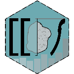

idaifieldR 
The R-package idaifieldR imports data from the iDAI.field 2 / Field Desktop database into R without the hassle of CSV-exports. This package uses the CouchDB-API to connect to your running Field Desktop client and store the entire database (or just a subset) in a list right in R’s memory. With idaifieldR, you can update your data on-the-fly and flexibly re-run any R-script.
In addition to importing data, idaifieldR also offers some formatting to enhance processing in R. The relevant functions replace UUIDs with the corresponding identifiers, unnest lists, and reformat the geometry to be compatible with, e.g., the sp-package. For more information, check out the Demo-Vignette. It’s worth noting that processing all resources from larger databases can be time-consuming and memory-intensive, so I recommend only processing the subsets actually needed for your analyses.
Key Features
- Import from a running iDAI.field 2 or 3 (Field Desktop) client into R
- Query it, or get the complete project database into R
- Automatically format the data for easier processing
- Get metadata such as creation and modification dates by user
- Just like anything done with R: easily re-run any analyses when your data has changed!
Dependencies
idaifieldR needs a syncing iDAI.field/Field Desktop-Client on the same computer or in the same network to work. Other than that, the package depends on crul and jsonlite, both available on CRAN and automatically installed as dependencies.
Installation
You can install the current version of idaifieldR from GitHub using devtools or remotes:
devtools::install_github("lsteinmann/idaifieldR", build_vignettes = TRUE)
# OR
remotes::install_github("lsteinmann/idaifieldR", build_vignettes = TRUE)Basic Workflow Example
A demonstration of the package and some of its uses is included in the paper “R wie in: Reproduzierbar. Auswertung von Daten aus Field Desktop mit idaifieldR” published in the Forum for Digital Archaeology and Infrastructure (2023, DOI: 10.34780/068b-q6c7) and the corresponding supplement. Alternatively, you can check out the Demo.Rmd-vignette (browseVignettes("idaifieldR")) or the TLDR.Rmd-vignette for a shorter overview.
First, we connect to the “rtest” project using connect_idaifield() and retrieve an index of all resources using get_field_index(). Next, we import all resources from the database into a single list of lists using get_idaifield_docs(). While this provides metadata about changes and users, it can be slow and use up a lot of memory. Alternatively, we can query the database directly using idf_query() to retrieve only the resources we need, such as all resources of the “pottery” category.
After importing the data, we use simplify_idaifield() to transform the nested list into a more usable format, replacing UUIDs with identifiers and converting dating fields to minimum and maximum values. If a configuration is available, variables from checkbox-fields are also converted to multiple columns with boolean values. Lastly, we can use idaifield_as_matrix() to produce a matrix where each row represents a resource and each column represents a field or a checkbox value. This matrix can be easily converted into a data.frame for further analysis:
library(idaifieldR)
# Connect to iDAI.field:
conn <- connect_idaifield(pwd = "hallo", project = "rtest")
# Get an index of the projects database:
index <- get_field_index(conn)
# Get all docs from the projects database:
idaifield_docs <- get_idaifield_docs(conn)
# Get only the docs of category "Pottery" from the database:
pottery <- idf_query(conn, field = "category", value = "Pottery")
# Simplify the nested list:
pottery <- simplify_idaifield(pottery, uidlist = index)
# Convert it into a matrix:
pottery_mat <- idaifield_as_matrix(pottery)
# Look at the result:
View(pottery_mat)Contribution
As I constantly use it for my own work, I am improving this package and trying to stay up-to-date with everything as I go. A special thanks goes to ChatGPT for helping me a lot with the documentation. Much of the code is rather old and reflects my learning process much more than good practice. However, I would be happy about any feedback – be it in the form of issues or feature requests – and would be even happier if anyone would like to collaborate on this project. If you are interested in contributing to idaifieldR, feel free to get in touch with me – or don’t, and just fork it! ;)